Services
Consultation & Diagnostic Services
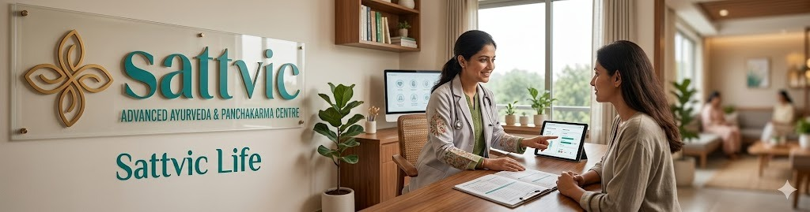
360° wellness Consultation & Diagnosis
360° wellness Consultation
Full body wellness diagnosis and consultation.

Nadi Pariksha (Pulse Diagnosis)
Nadi Pariksha
Assessment of vata,pitta,kapha imbalance, organ-level functional insights
Detailed case history
Detailed case history
Thorough review of medical history, symptoms, and health concerns
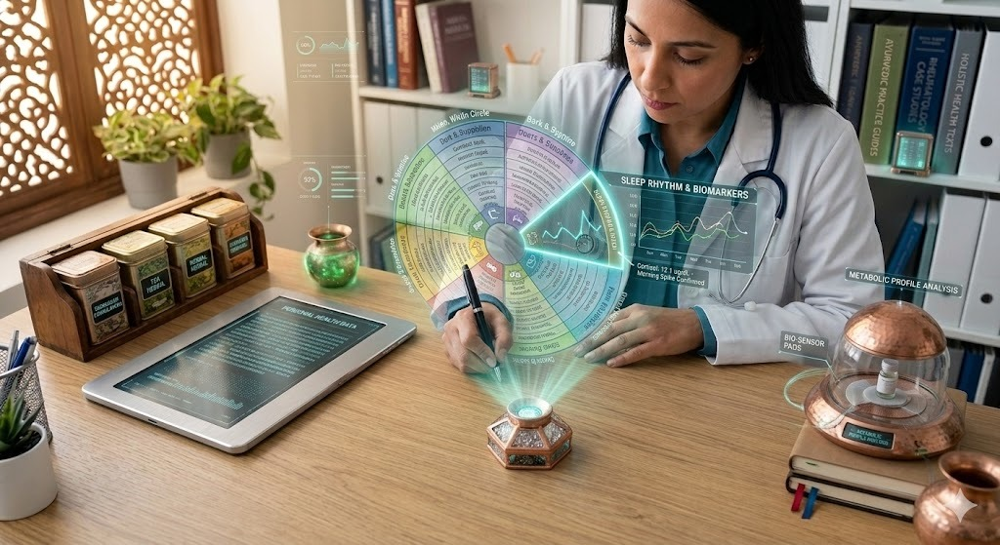
Lifestyle & routine analysis(Dinacharya assessment)
Lifestyle & routine analysis(Dinacharya assessment)
Evaluation of daily habits from wake-up to sleep for balanced living.
.jpg)
Prakriti & Vikriti Analysis(Body constitution and imbalance assessment)
Prakriti & Vikriti Analysis(Body constitution and imbalance assessment)
Body constitution assessment & current dosha imbalance evaluation, personalized treatment planning.
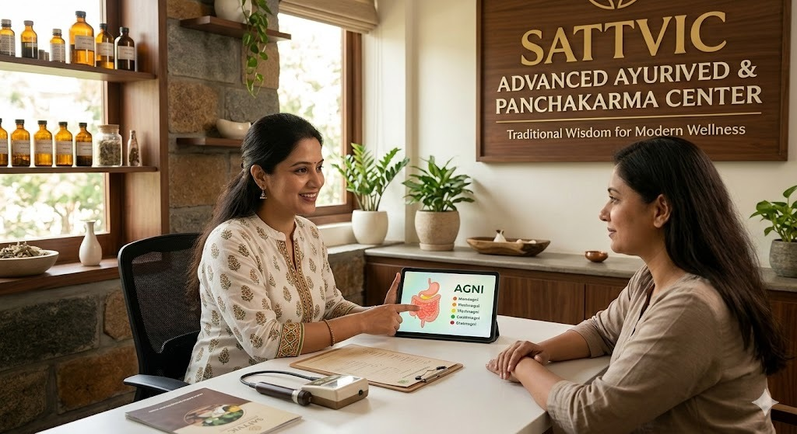
Agni assessment (Digestive health evaluation)
Agni assessment ( Digestive health evaluation)
Digestive strength evaluation, metabolism analysis, Ama(toxin) assessment
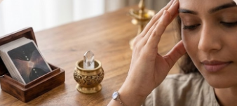
Manas assessment (Mental health evaluation)
Manas assessment (Mental health evaluation)
stress level assessment, emotional imbalance screening, sleep assessment, Mind-body connection analysis.
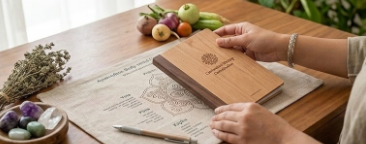
Lifestyle & Dietary Mapping
Lifestyle & Dietary Mapping
24 hr routine evaluation, Work-life balance analysis, personalized diet & lifestyle recommendations.
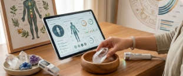
Modern Diagnostic Support
Modern Diagnostic Support
Lab report review, blood tests interpretations, BMD scan available.
Home Regimens
Home Regimens
Customized care plans that can be easily followed at home, reducing the need for frequent clinic visits-designed for pain relief, detoxification, overall well-being, and long term healing.
Personalized Yoga Planning
Personalized Yoga Planning
Yoga practices designed according to body constitution and health goals.
Panchakarma & Detox Therapies
Panchakarma is an Ayurvedic detox therapy that is not just cleansing—it is a systematic purification process that improves digestion, metabolism, immunity, mental clarity, and overall vitality. It is designed to eliminate deep-seated toxins (Ama), balance the doshas (Vata, Pitta, and Kapha), and restore the body’s natural healing ability. It is a personalized, doctor-guided process that cleanses the body at a cellular level. These procedures are advised considering disease conditions, seasonal variations, and stages of life. Healthy individuals may also undergo them in every season for preventive and rejuvenative benefits.

Nasya
Uttarbasti( Include in Panchakarma services)
Uttarbasti( Include in Panchakarma services)
Uttara Basti is a specialized Ayurvedic Panchakarma procedure in which medicated oils or herbal decoctions are administered through the urethral passage in men and women or through the vaginal route in women to directly act on the urinary and reproductive organs. This therapy helps cleanse, nourish, and strengthen the organs of the uro-genital system, thereby restoring their normal function and improving reproductive and urinary health. It is commonly used in conditions such as urinary disorders, difficulty in urination, urinary infections, Urinary Incontinence, Neurogenic Bladder, bladder inflammation, stones in the urinary tract, male infertility, impotence, menstrual disorders, uterine and vaginal disorders, and female infertility. The therapy works by cleansing accumulated doshas in the bladder and uterus, reducing inflammation, improving circulation, and supporting proper functioning of reproductive organs. The procedure is performed under medical supervision. Before the therapy, the patient is prepared with mild abhyanga (oil massage) and fomentation. Then a small quantity of sterile medicated oil or herbal preparation is gently introduced into the urethra or vaginal canal using a specialized catheter or instrument. The medicine acts locally on the affected organs to promote healing, nourishment, and rejuvenation of tissues.
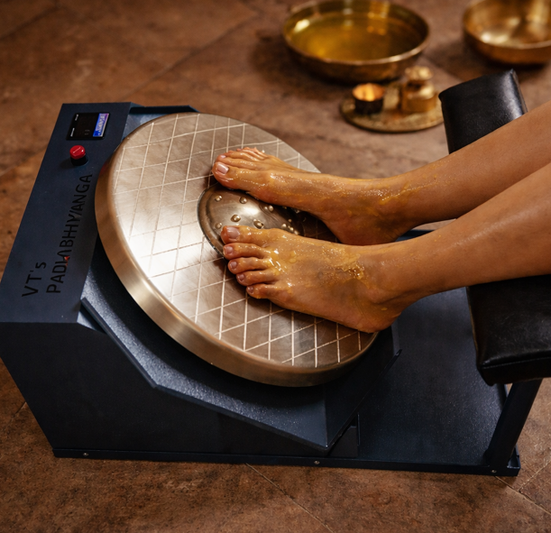
Padabhyanga with Kansa Thali
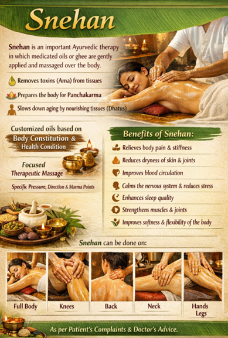
Abhyanga(Full Body Massage)
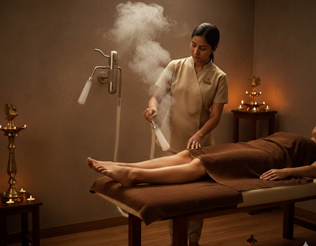
Swedan (Medicated Steam Bath)
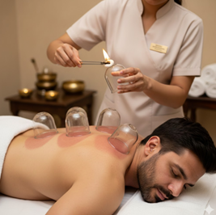
Raktamokshan(Blood Detox therapy)
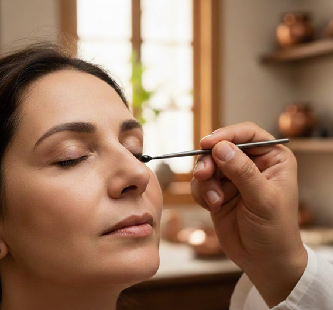
Anjan
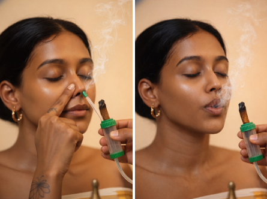
Dhoompan(Medicated Smoke therapy)
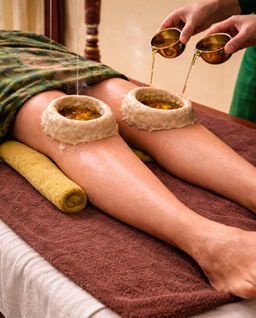
Janu Basti
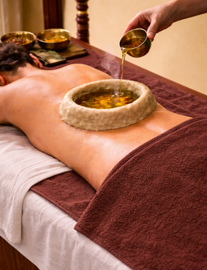
Kati Basti
Prishta Basti
Prishta Basti
Prishta Basti is an Ayurvedic therapy in which warm medicated oil is retained over the lower back using a herbal dough ring. The warmth allows the oil to penetrate deeper tissues, helping nourish the muscles and balance Vata dosha. It is commonly used for Chronic back pain, Spine stiffness, Spine disprders and weakness of the back. The therapy helps reduce pain and inflammation, relax muscles, improve circulation, and support spinal strength and mobility.
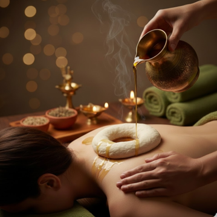
Greeva Basti

Hrid Basti
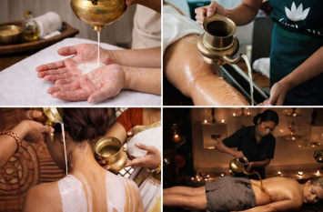
Dhara
Upanaha
Upanaha
Upanaha is a traditional Ayurvedic therapeutic procedure in which a warm herbal poultice is applied over a painful or affected area of the body and then covered and retained for a specific duration. The poultice is prepared using medicinal powders mixed with substances such as warm oils, ghee, herbal decoctions, fermented liquids, or animal fats, selected according to the aggravated dosha. Upanaha provides sustained warmth (Swedana) and allows the medicinal substances to penetrate deeply into the tissues, making it especially useful in musculoskeletal and joint disorders. The importance of Upanaha lies in its ability to reduce pain, stiffness, swelling, and inflammation, particularly in conditions like osteoarthritis, rheumatoid arthritis, lower back pain, cervical and lumbar spondylosis, frozen shoulder, and sports injuries. The continuous warmth improves local circulation, relaxes muscles, softens contracted tissues, and facilitates the removal of ama (toxins). By pacifying aggravated Vata and Kapha doshas, Upanaha promotes healing, restores joint mobility, and enhances overall comfort, making it a valuable therapy in both acute and chronic painful conditions.
उपनाह
उपनाह ही एक पारंप रक आयुवदीय उपचारपद्धती आहे, ज्यामध्ये वेदनायुक्त कंवा बा धत भागावर उबदार औषधी लेप (पोटली/पाक) लावून तो व शष्ट कालावधीसाठी झाकून ठेवला जातो. हा लेप औषधी चूण, उबदार तेल, तूप, औषधी काढे, आंबवलेले द्रव कंवा प्राणीजन्य मेद यांचे मश्रण करून तयार केला जातो व तो वाढलेल्या दोषानुसार नवडला जातो. उपनाह उपचारामुळे सातत्याने उष्णता (स्वेदन) मळते व औषधी द्रव्ये खोलवर ऊतींमध्ये शोषली जातात, त्यामुळे हा उपचार स्नायू-सांध्यांच्या वकारांमध्ये वशेषतः उपयुक्त ठरतो. उपनाहचे महत्त्व वेदना, कडकपणा, सूज व दाह कमी करण्यामध्ये आहे, वशेषतः सं धवात, सं धवातजन्य वकार, कंबरदुखी, मानेचा व कंबरेचा स्पॉिन्डलो सस, फ्रोजन शोल्डर तसेच क्रीडाजखमांमध्ये. सतत मळणाऱ्या उष्णतेमुळे स्था नक रक्ता भसरण सुधारते, स्नायू श थल होतात, आकु ंचन पावलेल्या ऊती मऊ होतात व आम ( वषद्रव्ये) बाहेर टाकण्यास मदत होते. वाढलेला वात व कफ दोष शांत करून उपनाह उपचार बरे होण्याची प्र क्रया वेगवान करतो, सांध्यांची हालचाल सुधारतो आण तीव्र तसेच जुनाट वेदनायुक्त अवस्थांमध्ये एकूणच आराम प्रदान करतो.
Churna Pinda Sweda
Churna Pinda Sweda
Churna Pinda Sweda also known as Podikizhi is a classical Ayurvedic sudation therapy in which carefully selected herbal powders with analgesic, anti-inflammatory, and anti-degenerative properties are heated or fried in medicinal oils, tied into a cloth bolus (pottali/pinda), and then gently rubbed over the affected parts of the body while still warm. The bolus is reheated and replaced repeatedly during the session to maintain a consistent therapeutic temperature.The warmth and medicinal properties of the herbs help induce sweating, improve circulation, and allow deep penetration into muscles and joints. This therapy is especially useful in reducing pain, stiffness, swelling, and inflammation in conditions such as osteoarthritis, rheumatoid arthritis, back pain, spondylosis, sciatica, and muscular or nerve-related disorders. By pacifying aggravated doshas and aiding in the removal of toxins, Pottali Churna Sweda improves mobility, relaxes tissues, and provides significant relief in both acute and chronic musculoskeletal conditions.
चूण पंड स्वेदन
चूण पंड स्वेदन याला पो ड कझी असेही म्हणतात, ही एक पारंप रक आयुवदक स्वेदन च कत्सा आहे. या प्र क्रयेत वेदनाशामक, सूज कमी करणारे व क्षयरोधक गुणधम असलेली नवडक औषधी चूण औषधी तेलात गरम कंवा परतून घेतली जातात. ही चूण कापडी पोटलीत बांधून गरम अवस्थेत शरीराच्या वेदनाग्रस्त भागावर हलक्या हाताने चोळली जातात. उपचारादरम्यान पोटली योग्य उष्णता टकवण्यासाठी वारंवार गरम करून बदलली जाते. या उपचारामुळे घाम येतो, स्था नक रक्तसंचार सुधारतो आ ण औषधी द्रव्ये स्नायू व सांध्यांमध्ये खोलवर शोषली जातात. पोटली चूण स्वेदन ऑिस्टओआथराय टस, सं धवात, पाठदुखी, सव्हायकल व लंबर स्पॉन्डायलो सस, साय टका तसेच स्नायू व नसांच्या वकारांमध्ये वेदना, कडकपणा, सूज व दाह कमी करण्यासाठी वशेष उपयुक्त आहे. दोषशामन करून आ ण टॉिक्सन्स शमन करून ही च कत्सा सांध्यांची हालचाल सुधारते, स्नायू ंना श थल करते आ ण तीव्र तसेच दीघकालीन वेदनादायक अवस्थांमध्ये लक्षणीय आराम देते.
Shashtika Shali Pinda Sweda
Shashtika Shali Pinda Sweda
It is also known as Njavara Kizhi in Kerala Ayurveda. It is a sweat-inducing therapeutic massage performed using boluses prepared from Shashtika rice cooked in herbal decoction and milk. The warm rice boluses (kizhi) are rhythmically massaged over the body to produce gentle sweating (swedana), allowing heat and nourishment to penetrate deeply into the tissues. This therapy strengthens Mamsa dhatu (muscle tissue), improves muscle tone, and acts as a Rasayana (rejuvenative) treatment, restoring vitality, energy, and overall well-being. The combined effect of warmth and massage helps relieve joint and muscle pain, stiffness, inflammation, and weakness, improves flexibility and circulation, and supports soft-tissue nourishment and detoxification. It is especially beneficial in arthritis, joint stiffness, muscle wasting, neuromuscular weakness, post-paralysis rehabilitation, general debility, age-related degeneration, stress, poor circulation, and low vitality, leaving the body relaxed and the skin soft and radiant.
षष्टीक शाली पंड स्वेद
षष्टीक शाली पंड स्वेद ही एक घाम आणणारी आयुवदीय उपचारपद्धती असून केरळ आयुवदामध्ये तला नवार कझी (Njavara Kizhi) असेही म्हटले जाते. या उपचारामध्ये षष्टीक शाली तांदूळ औषधी काढा व दूध यामध्ये शजवून कापडी पोटली ( कझी) तयार केली जाते. ही उबदार पोटली संपूण शरीरावर ठरा वक लयीत फरवली जाते, ज्यामुळे सौम्य स्वेदन (घाम) होऊन उष्णता व पोषणद्रव्ये खोल ऊतींमध्ये शोषली जातात. ही च कत्सा मांस धातू बळकट करते, स्नायू ंचा टोन सुधारते व रसायन (पुनरुज्जीवन) उपचार म्हणून शरीरातील शक्ती, उत्साह व एकूण आरोग्य वाढवते. उष्णता व मा लश यांच्या संयुक्त प रणामामुळे सांधेदुखी, स्नायूदुखी, जडपणा, सूज व अशक्तपणा कमी होतो, लव चकता व रक्ता भसरण सुधारते तसेच मृद ऊतींचे पोषण व शुद्धीकरण होते. ही उपचारपद्धती वशेषतः सं धवात, सांधेदुखी व जडपणा, स्नायू क ् षीणता, न्यूरो-मस्क्युलर दुबलता, पक्षाघातानंतरची पुनवसन च कत्सा, सवसाधारण अशक्तपणा, वयोमानानुसार होणारा ऱ्हास, ताणतणाव, कमी रक्ता भसरण व कमी ऊजा यामध्ये उपयुक्त असून शरीरास स्फूत देत त्वचा मऊ व तेजस्वी बनवते.
Udvartan(Full Body Scrub Massage)
Udvartan(Full Body Scrub Massage)
Udvartana is a classical Ayurvedic therapy that involves a herbal powder massage applied from lower parts of the body upwards using specially prepared medicinal powders. This method differs from conventional oil massage and is designed to mobilize accumulated metabolic wastes and stagnant fat while stimulating circulation and metabolic activity. It is traditionally used in weight management and slimming programs because the brisk, upward massage helps to liquefy and mobilize excess fat, support metabolism, and improve body contour. The herbal powders act as natural exfoliants that cleanse the skin, remove dead cells, and enhance texture and glow. By increasing blood and lymph circulation, Udvartana promotes detoxification, refreshes the tissues, and can help reduce heaviness, sluggishness, and fluid retention. Udvartana is indicated in a wide range of conditions including obesity and overweight, high cholesterol, metabolic syndrome, sluggish metabolism, lethargy, and lack of freshness. It is also used to improve skin health and glow, manage conditions like psoriasis, tone muscles and joints, support detoxification as part of Panchakarma preparations, and assist with complications of lifestyle imbalance such as PCOS and hypothyroidism.
उद्वतन (संपूण शरीराचा स्क्रब मसाज)
उद्वतन ही एक पारंप रक आयुवदक च कत्सा पद्धती आहे, ज्यामध्ये वशेष तयार केलेल्या औषधी चूणाचा उपयोग करून शरीराच्या खालच्या भागांपासून वरच्या दशेने मा लश केली जाते. ही पद्धत सामान्य तेलमा लशपेक्षा वेगळी असून शरीरात साचलेले आम (metabolic waste) व िस्थर झालेली मेदधातू हालचालीत आणण्यास तसेच रक्ता भसरण व चयापचय क्रया स क्रय करण्यासाठी उपयुक्त ठरते. वजन नयंत्रण व िस्ल मंग उपचारांमध्ये उद्वतनाचा वशेष उपयोग केला जातो, कारण जलद व वरच्या दशेने केलेल्या मा लशेमुळे अ त रक्त मेद वतळण्यास मदत होते, चयापचय सुधारतो आ ण शरीराचा आकार सुडौल होण्यास सहाय्य होते. उद्वतनासाठी वापरली जाणारी औषधी चूण नैस गक स्क्रबसारखी काय करतात. ती त्वचा स्वच्छ करतात, मृत पेशी काढून टाकतात आ ण त्वचेचा पोत व कांती सुधारतात. रक्त व ल सका भसरण वाढल्यामुळे शरीरातील वषद्रव्यांचे शुद्धीकरण होते, धातू ताजेतवाने होतात तसेच जडपणा, आळस व सूज कमी होण्यास मदत होते. उद्वतनाचा उपयोग स्थूलता व जादा वजन, वाढलेले कोलेस्टेरॉल, मेटाबॉ लक संड्रोम, मंद चयापचय, आळस आ ण ताजेपणाचा अभाव अशा व वध अवस्थांमध्ये केला जातो. यासोबतच त्वचेचे आरोग्य व तेज वाढ वण्यासाठी, सोराय सससारख्या त ्वचारोगांमध्ये, स्नायू व सांध्यांना बळकटी व टोन देण्यासाठी, पंचकम उपचारांपूव शरीरशुद्धीच्या तयारीसाठी तसेच PCOS व हायपोथायरॉई डझमसारख्या जीवनशैलीशी संबं धत वकारांमध्येही उद्वतन उपयुक्त ठरते.
Karnapuran
Karnapuran
Karnapuran is a classical Ayurvedic ear therapy in which warm medicated oil is gently instilled into the ears to pacify Vata dosha and nourish the ear and nervous system. It strengthens the ear structures, soothes the mind, and supports overall neurological balance. Karnapuran is beneficial in ear pain, dryness, excess wax, tinnitus, impaired hearing, ear infections, dizziness, vertigo, headache, migraine, stress, sleeplessness, and mental fatigue. When done regularly under medical guidance, it helps maintain ear health, calms the nervous system, and improves overall well-being.
कणपूरण
कणपूरण ही एक पारंप रक आयुवदक कानाची च कत्सा असून यामध्ये कोमट औषधी तेल कानात सौम्यपणे टाकले जाते. ही च कत्सा वातदोष शांत करण्यास तसेच कान व मज्जासंस्थेचे पोषण करण्यास मदत करते. कणपूरणामुळे कानाच्या रचना बळकट होतात, मन शांत होते आ ण मज्जासंस्थेचे संतुलन राखले जाते. कणपूरणाचा उपयोग कानदुखी, कान कोरडे पडणे, जादा कानातील मळ, कणनाद (कानात आवाज येणे), श्रवणशक्ती कमी होणे, वारंवार होणारे कानाचे संसग, चक्कर येणे, गरगरणे, डोकेदुखी, मायग्रेन, ताणतणाव, नद्रानाश व मान सक थकवा अशा तक्रारींमध्ये होतो. वैद्यांच्या मागदशनाखाली नय मत कणपूरण केल्यास कानांचे आरोग्य टकून राहते, मज्जासंस्था शांत होते आ ण एकूण आरोग्यात सुधारणा होते.
Netra Tarpana
Netra Tarpana
Netra Tarpana is a classical Ayurvedic eye therapy derived from Netra (eyes) and Tarpana (nourishment). In this procedure, a soft dough ring is carefully formed around the eye sockets, and protective eye goggles are placed as shown in the image to ensure safety and proper retention, after which warm medicated ghee or herbal oil is gently retained over the eyes for a specific duration, allowing direct nourishment of the eye tissues. This therapy aims to lubricate, nourish, strengthen, and rejuvenate the eyes while supporting overall eye health. Netra Tarpana provides both preventive and therapeutic benefits. It soothes dry and tired eyes, relieves strain and irritation, and improves clarity of vision by nourishing the optic tissues. The medicated ghee helps reduce burning, redness, itching, and fatigue, making it especially beneficial for those with prolonged screen exposure or environmental stress. Regular therapy strengthens ocular muscles and nerves, reduces dark circles and puffiness, slows age-related degenerative changes such as early cataract and glaucoma, and by balancing aggravated Pitta and Vata dosha, supports long-term eye health and overall well-being.
नेत्र तपण (Netra Tarpana)
नेत्र तपण ही एक पारंप रक आयुवदक डोळ्यांची थेरपी आहे, िजथे 'नेत्र' म्हणजे डोळे आ ण 'तपण' म्हणजे पोषण. या प्र क्रयेत डोळ्याभोवती मऊ पीठाचा वतुळ तयार केला जातो आ ण त ्यावर सुर क्षततेसाठी वशेष रक्षणात्मक चष्मा ठेवला जातो. नंतर डोळ्यांवर हळुवारपणे औषधी तुप कंवा वनस्पती तेल ठेवले जाते आ ण काही वेळ तसे ठेवून डोळ्यांच्या ऊतकांना थेट पोषण मळते. ही थेरपी डोळ्यांना आद्रता, पोषण आ ण मजबुती देण्यास मदत करते तसेच त्यांचे आरोग्य टकवते. नेत्र तपण कोरडे, थकलेले डोळे आराम देते, डोळ्यांचा ताण, जळजळ, लालसरपणा आ ण खाज कमी करते, आ ण दृिष्ट सुधारण्यासाठी आवश्यक पोषण पुरवते. औषधी तुप डोळ्यांतील जळजळ, लालसरपणा, खाज आ ण थकवा कमी करण्यात मदत करते, ज्यामुळे दीघकाळ स्क्रीनवर काम करणाऱ्या कंवा पयावरणीय ताणग्रस्त लोकांसाठी ही थेरपी वशेष फायदेशीर ठरते. नय मत नेत्र तपण डोळ्यांच्या स्नायू आ ण मज्जा मजबूत करते, डोळ्याखालील काळे वतुळे आ ण सूज कमी करते, वयाप्रमाणे होणाऱ्या कॅटारॅक्ट आ ण ग्लॉकोमा सारख्या समस्यांची प्रगती मंद करते, तसेच वात आ ण पत्त दोष संतु लत करून डोळ्यांचे दीघकालीन आरोग्य आ ण एकूण कल्याण टकवते.
Netra Dhawan
Netra Dhawan
Netra Dhawan is a traditional Ayurvedic eye cleansing and care therapy. In this procedure, the eyes are gently washed with a stream of medicated liquid or specially prepared herbal solution to cleanse the eyes. This helps remove accumulated dust, strain, fatigue, redness, itching, and irritation. Netra Dhawan refreshes the eyes, improves blood circulation, and supports clear vision. Regular practice strengthens the eye muscles, maintains eye health, reduces the risk of eye disorders, and helps balance aggravated Vata and Pitta doshas. It is especially beneficial for those who spend long hours in front of screens or are exposed to dusty or polluted environments.
नेत्रधावन (Netra Dhawan)
नेत्रधावन ही पारंप रक आयुवदक डोळ्यांची स्वच्छता आ ण देखभाल करण्याची थेरपी आहे. या प ् र क्रयेत डोळ्यांवर हळुवारपणे औषधी द्रावण कंवा वशेष तयार केलेले हबल सोल्यूशन ओतले जाते, ज्यामुळे डोळे स्वच्छ होतात. यामुळे डोळ्यांमध्ये जमा झालेली धूळ, ताण, थकवा, लालसरपणा, खाज आ ण जळजळ दूर होतात. नेत्रधावन डोळ्यांना ताजगी देते, रक्ता भसरण सुधारते आ ण दृिष्ट स्पष्ट ठेवते. नय मत नेत्रधावन केल्यास डोळ्यांचे स्नायू मजबूत होतात, डोळ्यांचे आरोग्य टकते, डोळ्यांच्या आजारांचा धोका कमी होतो आ ण वात- पत्त दोष संतु लत राहतात. जास्त वेळ स्क्रीन पाहणारे कंवा धूळ-धूर वातावरणात राहणारे लोक यासाठी वशेष लाभदायक ठरतात.
Kesha Dhoopan
Kesha Dhoopan
Kesha Dhupan is a classical Ayurvedic hair therapy in which specific medicinal herbs are gently burned, and the warm herbal smoke is directed over the scalp while the person sits in a comfortable posture. The smoke penetrates the hair follicles and scalp, helping to nourish the roots, improve circulation, and strengthen the hair. Kesha Dhoopan is indicated for conditions such as hair fall, premature greying, dry or brittle hair, dandruff, scalp infections, and general weakness of hair. It is also beneficial for calming scalp inflammation, reducing itching, and improving the natural shine and texture of hair. The therapy not only nourishes and strengthens the hair but also balances aggravated Vata and Pitta doshas in the scalp, supporting long-term hair health, preventing hair-related disorders, and promoting overall well-being.
केश धुपन
केश धुपन ही पारंप रक आयुवदक केसांची थेरपी आहे, ज्यात काही खास औषधी वनस्पती हलक्या गतीने जाळल्या जातात आ ण त्याचा उष्ण धूर डोक्यावर फु ंकला जातो, जेव्हा व्यक्ती आरामदायी पद्धतीने बसलेली असते. हा धूर केसांच्या मुळांमध्ये आ ण डोक्याच्या त्वचेत शरतो, मुळांना पोषण देतो, रक्ता भसरण सुधारतो आ ण केस मजबूत करतो. केश धुपन हे केस गळणे, लवकर पांढरे होणे, कोरडे कंवा तुटणारे केस, केसांची सुकं पडणे, डोक्यावरील खाज कंवा संसग, तसेच केसांची कमजोरी अशा समस्यांसाठी उपयोगी ठरते. यामुळे डोक्यावरील जळजळ कमी होते, खाज कमी होते आ ण केसांना नैस गक तेज आ ण मऊपणा मळतो. ही थेरपी केवळ केसांना पोषण देत नाही आ ण मजबूत करत नाही, तर डोक्यावरील वात आ ण पत्त दोषही संतु लत करते, ज्यामुळे केसांचे दीघकालीन आरोग्य टकते, केसांशी संबं धत आजार टाळता येतात आ ण एकूण शरीर आ ण मनाचे कल्याण सुधारते.
Dhoopan
Dhoopan
Dhoopan, also called dhupan or medicated fumigation, is a traditional Ayurvedic therapy in which specific herbal powders, resins, and medicinal substances are burned to produce therapeutic smoke. This smoke is directed toward the body part being treated — such as wounds, nasal passages, ears, or oral cavity — or into the environment, like a room or instruments, to purify, disinfect, and promote healing. Herbs are often mixed with ghee, honey, or other substances and burned so the fumes disperse over the target area. Dhoopan is used both preventively and as a treatment, reaching deep organs like the head, neck, and body cavities, helping dry excess secretions and clear blockages. It is especially indicated where Kapha, fluids, phlegm or wound secretions need to be dried, and is used in cases of airborne infections or pandemics as a measure of disinfection due to its purifying and antimicrobial action. Dhoopan is indicated for infections, wounds, ulcers, haemorrhoids, skin diseases, sinus congestion, psychiatric conditions, and other ailments where drying, purifying, or disinfection is needed. Benefits include improved blood circulation, relief from pain and inflammation, softening of wound tissues and scars, reduction of swelling, itching and irritation, relief from infection, and natural disinfection and sterilization. Additionally, the aromatic fumes soothe the mind and provide a sense of freshness to both the environment and the individual.
धुपन (औषधी धूपस्नान)
धुपन, ज्याला धुपन कंवा औषधी धूपस्नान असेही म्हणतात, ही पारंप रक आयुवदक थेरपी आहे, ज्यात काही व शष्ट औषधी वनस्पतींचे पूड, राळ आ ण औषधी पदाथ जाळले जातात आण त्यातून उपचारात्मक धूर तयार होतो. हा धूर ज्या शरीराच्या भागावर उपचार करायचा असतो — जसे की जखमा, नाक, कान कंवा तोंड — कंवा प रसरात, जसे की खोली कंवा उपकरणांवर, फु ंकला जातो, ज्यामुळे स्वच्छता, रोगनाश आ ण उपचारास मदत होते. औषधी वनस्पती साधारणपणे तूप, मध कंवा इतर पदाथासोबत मसळून जाळल्या जातात, ज्यामुळे धूर लक्ष्य क्षेत्रावर समान पद्धतीने पसरतो. धुपन ही थेरपी प्र तबंधात्मक आ ण उपचारात्मक दोन्ही प ् रकारे वापरली जाते, आ ण डोक्याच्या, मानाच्या आ ण शरीराच्या गुहा भागांमध्ये पोहोचून अत रक्त द्रव, श्लेष्म कंवा स्राव कोरडे करण्यास आ ण अडथळे दूर करण्यास मदत करते. वशेषतः िजथे कफ, द्रव, श्लेष्म कंवा जखमेतील स्राव कोरडे करणे आवश्यक असते, तसेच हा उपचार हवेने होणाऱ्या संसग कंवा महामारीच्या काळात प रसर स्वच्छ करण्यासाठी व रोगनाशक उपाय म्हणून वापरला जातो. धुपन संसग, जखमा, फोड, बवासीर, त्वचेचे आजार, सायनस कोंजेशन, मान सक आजार आ ण इतर रोगांमध्ये उपयोगी ठरते, िजथे कोरडे करणे, शुद्धीकरण कंवा रोगनाश आवश्यक असतो. याचे फायदे म्हणजे रक्ता भसरण सुधारते, वेदना आण जळजळ कमी होते, जखमेची आ ण फोडांची ऊतक मऊ होतात, सूज, खाज व जळजळ कमी होते, संसग दूर होतो आ ण नैस गक स्वच्छता व रोगनाश होते. या शवाय, औषधी धूप मनाला शांत करते आ ण प रसर व व्यक्तीस ताजेतवाने वाटते.
Yoni Dhupan
Yoni Dhupan
Yoni Dhupan is a traditional Ayurvedic therapy in which medicinal herbal smoke is applied to the vaginal area to promote health and hygiene of the female reproductive system. In this procedure, specific herbs with cleansing, antimicrobial, and healing properties are gently burned, and the warm therapeutic smoke is directed over the yoni (vaginal area). This helps to purify the tissue, reduce infections, relieve itching, irritation, or discharge, and maintain overall reproductive health. Yoni Dhupan is indicated for conditions such as vaginal infections, excessive discharge, inflammation, foul odor, and other gynecological disorders. It is also particularly useful postpartum, to help the uterus heal and to care for vaginal stitches. The therapy helps improve local circulation, supports tissue healing, balances aggravated Vata and Pitta doshas, and provides a soothing and refreshing effect. Regular practice promotes hygiene, prevents infections, strengthens the vaginal tissues, and enhances overall well-being.
योन धुपन (Yoni Dhupan)
यो न धुपन ही पारंप रक आयुवदक थेरपी आहे, ज्यात औषधी वनस्पतींचा धूर यो न (स्त्री जननें द्रय भाग) वर फु ंकला जातो, ज्यामुळे स्त्री जननें द्रयाचे आरोग्य आ ण स्वच्छता राखली जाते. या प्र क्रयेत स्वच्छता, रोगनाशक आ ण बरे करण्याच्या गुणधम असलेल्या व शष्ट औषधी वनस्पती हलक्या गतीने जाळल्या जातात आ ण त्याचा उष्ण औषधी धूर यो न भागावर नदशत केला जातो. यामुळे ऊतक शुद्ध होतात, संसग कमी होतो, खाज, जळजळ कंवा असामान्य स्राव आराम मळतो आ ण एकूण जननें द्रयाचे आरोग्य टकते. यो न धुपन हे योनी संसग, जास्त स्राव, जळजळ, दुगधी आ ण इतर स्त्रीरोगांमध्ये उपयुक्त ठरते. तसेच, प्रसूतीनंतर गभाशयाच्या बरे होण्यास आ ण यो न शवणीकडे काळजी घेण्यासाठीही हे वशेष फायदेशीर आहे. ही थेरपी स ्था नक रक्ता भसरण सुधारते, ऊतकांच्या बरे होण्यास मदत करते, वात- पत्त दोष संतु लत करते, आ ण मनास शांत व ताजेतवाने करते. नय मत धुपन केल्यास स्वच्छता राखता येते, संसग टाळता येतो, यो न ऊतक मजबूत होतात आ ण एकूण आरोग्य व तंदुरुस्ती सुधारते.
Basti Chikitsa
Basti Chikitsa (Medicated Detox Enema Therapy)
is the prime Ayurvedic therapy for balancing Vata dosha, which controls movement, nerve function, and pain, and is therefore considered the most effective treatment for Vata-related disorders. It provides deep detoxification (Shodhana) by removing accumulated toxins (Ama) from the colon and deeper tissues and is revered as “Ardha Chikitsa” (half of all treatments) due to its wide-ranging impact on almost all body systems and tissues. In this treatment, medicinal liquids are administered through the anal route to purify and balance the body. Depending on the condition and needs of the patient, Basti can use herbal decoctions, medicated oils or ghee, medicated milk, or meat soup as the medicinal medium. It supports digestive health by clearing colon blockages, relieving chronic constipation, and improving nutrient absorption, while also offering significant relief in chronic pain and musculoskeletal conditions such as arthritis, sciatica, rheumatism, gout, and low back pain. Basti is beneficial for neurological and reproductive health, helping manage conditions like hemiplegia, Alzheimer’s, Parkinson’s disease, PCOD, and infertility. As a Rasayana (rejuvenation) therapy, it promotes longevity, strength, better complexion, and immunity. What makes Basti unique is its multidimensional action, as it simultaneously expels vitiated doshas and nourishes the body, its safety across all age groups, and its targeted action on the gut, the key center of Vata and the root cause of many diseases.
बस्ती (चकत्सा औषधी डटॉक्स एनमा थेरपी)
बस्ती ही वात दोष संतु लत करण्यासाठी आयुवदातील सवात महत्त्वाची आ ण प्रभावी च कत्सा आहे. वात दोष शरीरातील हालचाल, मज्जासंस्थेचे काय आ ण वेदना नयं त्रत करतो, म्हणूनच वाताशी संबं धत आजारांमध्ये बस्ती सवत्तम उपचार मानली जाते. बस्तीमुळे आतड्यांमध्ये आण खोल ऊतकांमध्ये साचलेले आम (टॉिक्सन्स) बाहेर टाकले जातात, त्यामुळे ती शोधन च कत्सा म्हणून ओळखली जाते. शरीराच्या जवळजवळ सव प्रणालींवर प रणाम करणारी असल्याने बस्तीला “अध च कत्सा” (सव उपचारांपैकी अधा भाग) असेही म्हटले जाते. या उपचारात औषधी द्रव पदाथ गुदमागाने दले जातात, ज्यामुळे शरीर शुद्ध होते आ ण दोष संतु लत होतात. रुग्णाच्या प्रकृतीनुसार आ ण आजारानुसार औषधी काढे, औषधी तेल कंवा तूप, औषधी दूध कंवा मांसरस यांचा वापर बस्तीसाठी केला जातो. बस्ती पचनसंस्थेचे आरोग्य सुधारते, आतड्यांतील अडथळे दूर करते, जुनाट बद्धकोष्ठता कमी करते आ ण पोषक घटकांचे शोषण वाढवते. तसेच सं धवात, साय टका, आमवात, गाऊट आ ण कंबरदुखी यांसारख्या दीघकालीन वेदनांमध्येही बस्ती खूप उपयोगी ठरते. बस्ती मज्जासंस्था आ ण प्रजनन आरोग्यासाठीही फायदेशीर असून अधागवायू, अल्झायमर, पा कन्सन रोग, पीसीओडी आ ण वंध्यत्व यांसारख्या समस्यांमध्ये मदत करते. रसायन च कत्सा म्हणून बस्ती आयुष्य वाढवते, शरीरबल, त्वचेचा तेज आ ण रोगप्र तकारक शक्ती वाढवते. बस्तीची खास वै शष्ट्ये म्हणजे ती एकाच वेळी दोष बाहेर काढते आ ण शरीराला पोषण देते, सव वयोगटांसाठी सुर क्षत आहे, आ ण पोटातील वाताच्या मुख्य केंद्रावर थेट काम करून अनेक आजारांच्या मुळावर उपचार करते.
Ayurved Facial
Ayurved Facial
An Ayurvedic Facial is a natural skin-care therapy based on Ayurvedic principles that cleanses, nourishes, and rejuvenates the skin using herbal powders, medicated oils, natural pastes, steam, and gentle massage. Unlike chemical facials, it works by balancing the Doshas (Vata, Pitta, and Kapha) and improves skin health from within, making it safe and suitable for all skin types. This therapy deeply cleanses the pores and helps remove toxins (Ama), enhances skin glow, complexion, and texture, and reduces acne, pimples, pigmentation, and dark spots. It also supports anti-ageing by minimizing fine lines and wrinkles, nourishes skin tissues, improves blood circulation, and helps calm the mind by relieving stress. Being completely natural and chemical-free, regular Ayurvedic facials promote healthy, radiant, and youthful skin while maintaining the natural beauty and overall balance of the body and mind.
आयुवदक फे शयल
आयुवदक फे शयल ही आयुवदाच्या तत्त्वांवर आधा रत एक नैस गक त्वचा-उपचार पद्धत आहे. या उपचारामध्ये औषधी चूण, औषधी तेल, नैस गक लेप, वाफ आ ण सौम्य मा लश यांच्या साहाय्याने त्वचा स्वच्छ, पो षत व पुनरुज्जी वत केली जाते. के मकल फे शयलपेक्षा वेगळी असलेली ही पद्धत वात, पत्त आ ण कफ या दोषांचे संतुलन साधून त्वचेचे आरोग्य आतून सुधारते, त्यामुळे ती सव प्रकारच्या त्वचेसाठी सुर क्षत व उपयुक्त ठरते. या थेरपीमुळे त्वचेतील रंध्रे खोलवर स्वच्छ होतात, आम (toxins) दूर होण्यास मदत होते, त्वचेचा उजाळा, रंग व पोत सुधारतो तसेच मुरुम, पंपल्स, पग्मेंटेशन व काळे डाग कमी होतात. सुरकु त्या व बारीक रेषा कमी करून वृद्धत्वाच्या प्र क्रयेला आळा घालण्यास मदत होते, त्वचेच्या पेशींना पोषण मळते आ ण रक्ता भसरण सुधारते. या शवाय हा उपचार मन शांत करतो व ताणतणाव कमी करण्यास मदत करतो. पूणपणे नैस गक व के मकलमुक्त असल्यामुळे नय मत आयुवदक फे शयल केल्यास त ्वचा नरोगी, तेजस्वी व तरुण राहते आ ण शरीर व मनाचा समतोल टकून राहतो.
Shirodhara
Shirodhara
Shirodhara is a classical Ayurvedic therapy in which a continuous stream of warm medicated oil or milk or other herbal liquids are gently poured over the forehead. It deeply relaxes the mind and nervous system, helping balance mainly Vata and Pitta doshas. Shirodhara is highly beneficial for stress, anxiety, insomnia, mental fatigue, headaches, migraines, and hypertension (high blood pressure), as it calms the nervous system and reduces mental overactivity. It is also helpful in hormonal imbalances, PMS (premenstrual syndrome), pre-menopause, and post-menopausal symptoms such as mood swings, irritability, anxiety, hot flashes, and disturbed sleep. Additionally, Shirodhara improves sleep quality, concentration, and emotional stability, supports neurological and endocrine balance, nourishes the scalp and hair, and is effective in psychosomatic and stress-related disorders. Overall, it promotes deep relaxation, rejuvenation, and long-term mental and physical well-being.
शरोधारा (Shirodhara)
शरोधारा ही पारंप रक आयुवदक थेरपी आहे, ज्यात उष्ण औषधी तेल, दूध कंवा इतर औषधी द ् रव सतत आण सौम्यपणे कपाळावर ओतले जातात. हे मन आ ण मज्जासंस्थेवर खोल प रणाम करून शांतता देते आ ण मुख्यतः वात व पत्त दोषांचे संतुलन राखते. शरोधारा ताण, चंता, अनंद्रता, मान सक थकवा, डोकेदुखी, माइग्रेन आ ण उच्च रक्तदाब (हायपरटेन्शन) यांसारख्या िस्थतींमध्ये अत्यंत फायदेशीर आहे, कारण हे मज्जासंस्थेला शांत करते आ ण मान सक तणाव कमी करते. हे हामनल असंतुलन, पीएमएस (प्रीमेंस्ट्रुअल संड्रोम), पूव-रजो नवृत्ती ( प्र-मेनोपॉज) आण पोस्ट-मेनोपॉज लक्षणांमध्येही मदत करते, जसे की मूड बदल, चड चड, चंता, उष्णतेचे झटके आण झोपेची समस्या. शरोधारा झोपेची गुणवत्ता सुधारतो, लक्ष कें द्रत करण्यास मदत करतो, भावनात्मक िस्थरता वाढवतो, मज्जासंस्था व अंतःस्रावी संतुलन राखतो, केस व केसांच्या मुळांना पोषण देतो आ ण मान सक व शारी रक ताणाशी संबं धत आजारांमध्ये प्रभावी ठरतो. एकूणच, शरोधारा खोल आराम, पुनरुज्जीवन आ ण दीघकालीन शारी रक व मान सक तंदुरुस्ती वाढवतो.
Pain Management & Specialized Treatments
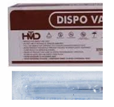
Viddhakarma (Para-surgical Therapy)
Viddhakarma (Para-surgical Therapy)
Agnikarma (Therapeutic Heat Therapy)
Agnikarma (Therapeutic Heat Therapy)
Agnikarma In Agnikarma therapy, specific points on the body are gently cauterized using a specially designed heated instrument known as a Shalaka. Based on the patient’s condition and the nature of the disease, different types of Shalaka such as gold, iron, copper, naga, or mruttika are selected to achieve the desired therapeutic effect. The controlled application of heat provides quick and long-lasting pain relief, reduces stiffness and inflammation, improves local blood circulation, relieves nerve compression, and helps prevent the recurrence of chronic pain conditions. In addition to pain management, Agnikarma is also used in certain eye-related conditions and cosmetic procedures such as the removal of warts, moles, corns, lipomas, and in supportive management of conditions like PCOD, Hernia.

Fire Cupping Therapy(Hijama)
Fire Cupping Therapy(Hijama)

Fire Cupping is a traditional therapeutic technique used to relieve pain, improve circulation, and detoxify the body. In this therapy, special cups are placed on specific areas of the body after creating mild suction using controlled heat. The vacuum effect gently draws the skin and underlying tissues upward, stimulating blood flow and removing stagnation. The suction created during fire cupping improves local blood circulation, Relieves muscle tension and stiffness, Reduces inflammation,Detox the blood, Promotes relaxation and faster recovery
Raktamokshan(Blood Detox therapy)
Raktamokshan(Blood Detox therapy)
Raktamokshan is an Ayurvedic purification therapy in which impure or vitiated blood is removed from the body. It is especially beneficial in conditions related to Pitta dosha imbalance and helps in cleansing and purifying the blood. This therapy helps reduce skin disorders such as acne, rashes, itching, boils, and inflammation. It also relieves pain and swelling, improves blood circulation, reduces acidity, decreases excess heat and toxins in the body, and supports overall immunity.
- Raktamokshan is commonly used in conditions such as varicose veins, sciatica, arthritis and other joint disorders, back pain, neck pain, headaches and migraines, muscle stiffness and spasms, and general pain or swelling. It is also indicated in burning sensation, suppuration, gout (vatharaktha), elephantiasis, toxic blood conditions, fibroid, tumors, mastitis, debility, heaviness of the body, conjunctivitis, sinusitis, herpes, liver or spleen abscess, bleeding disorders, and other conditions arising from vitiated blood. Raktamokshan can be performed through different methods such as leech therapy (Jalaukavacharan), venesection (Siravyadh), or cupping, depending on the patient’s condition, body constitution, and the doctor’s advice.
Women–Child Care
Bridal Wellness Package
Bridal Wellness Package
- Ayurvedic Skin Glow & Anti-Acne Program
- Body Detox & Weight Management
- Hair & Scalp Care
- Hormonal & Menstrual Balance
- Stress Relief & Emotional Wellness
- Personalized Diet & Lifestyle Plan
Beej Shuddhi(Pre-conception Detox)
Beej Shuddhi(Pre-conception Detox)
Beej Shuddhi is a vital Ayurvedic preconception program that prepares both parents for healthy conception. Just as farming needs the right season, fertile land, sufficient water, and good-quality seeds to grow a healthy plant, similarly, a healthy baby requires Rutu (right timing), Kshetra (a healthy uterus), Ambu (proper nourishment), and Beej (strong sperm and ovum). When these four factors are well balanced, they support healthy conception and proper fetal development. Through detoxification therapies like Panchakarma, along with proper diet and lifestyle corrections, it helps remove accumulated toxins and improves the quality of sperm and ovum. This creates a clean and nourishing internal environment for pregnancy, supports a smooth pregnancy, helps in the birth of a healthy and mentally strong child, and reduces the risk of congenital disorders and recurrent miscarriages.
Garbhini Paricharya(Ayurvedic Pregnancy Care)
Garbhini Paricharya(Ayurvedic Pregnancy Care)
At Sattvic Advanced Ayurveda, Garbhini Paricharya is offered as a personalized Ayurvedic care program for pregnant women. After individual assessment, we guide mothers with month-wise diet recommendations, lifestyle practices, daily routine guidance, and gentle herbal support based on classical Ayurvedic principles. As described in the Ayurvedic Shastras, appropriate month-wise medicines and formulations are advised to support the changing needs of the mother and the developing baby. Specific Ayurvedic support may also be provided to help maintain healthy fetal growth, adequate baby weight, and proper amniotic fluid levels (AFI) wherever required. Our medicines are also aimed at helping manage common pregnancy concerns such as tiredness, nausea, bloating, weakness, anemia, constipation, loss of appetite, mood swings, and abdominal discomfort, thereby supporting the overall health and comfort of the mother during pregnancy. Special attention is given to maternal comfort, emotional balance, and overall well-being during pregnancy. This holistic approach helps support the healthy growth and development of the baby, strengthens the mother’s health, and prepares the body for a smoother and more natural delivery.
Garbha Sanskar (Ayurvedic Prenatal Care & Conscious Pregnancy Guidance)
Garbha Sanskar (Ayurvedic Prenatal Care & Conscious Pregnancy Guidance)
Garbha Sanskar is an Ayurvedic prenatal practice that focuses on the physical, mental, and spiritual development of the baby during pregnancy. Ayurveda believes that a mother’s thoughts, emotions, behaviour, diet, lifestyle, music, and surroundings directly influence the growing fetus. For example, Ayurveda explains that the intellect of the fetus develops prominently around the fifth month; therefore, mothers are encouraged to engage in intellectually stimulating activities like typing on keyboard, or fine handwork such as weaving to positively influence cognitive and fine motor development of the fetus. Similarly, month-wise guidance is provided throughout pregnancy to support the holistic growth of the baby.
Normal Delivery
Normal Delivery
At Sattvic Advanced Ayurveda, special care is provided during the later months of pregnancy to help prepare the body for a smooth and natural delivery. Through appropriate diet, lifestyle guidance, and gentle Ayurvedic medicines, along with Basti (medicated enema) in the 8th and 9th months as described in Ayurvedic texts, the body is gradually supported to improve strength, flexibility, and natural readiness for childbirth. In addition, proper guidance is provided regarding traditional Ayurvedic practices during the time of labour, including when and how certain classical measures such as Eranda Taila (castor oil), Apamarga Moola, Langali, and other supportive remedies may be used. Guidance is also given regarding post-delivery care and placental expulsion practices mentioned in Ayurveda, ensuring that these are understood and followed safely. This careful guidance helps avoid misconceptions and supports the mother in achieving the maximum benefits of traditional Ayurvedic knowledge during childbirth.
Post partum Care(Sutika Paricharya)
Post partum Care(Sutika Paricharya)
At Sattvic Advanced Ayurveda, special care is provided for mothers after delivery to support proper recovery and restore strength. This includes appropriate Ayurvedic medicines, herbal decoctions, and nourishing formulations to help the body regain the strength lost during childbirth and to reduce body pain, weakness, and fatigue. Support is also provided for breast milk production and lactation, with the use of traditional Ayurvedic herbs such as Shatavari, which is freshly farm-prepared, chemical-free, and authentic, along with other suitable formulations. In addition, herbal bath preparations using Eranda Patra and other traditional herbs, medicated oil bathing, and Yoni Dhupan (vaginal fumigation) for supporting the healing of stitches are recommended. These external care practices help relieve tiredness, stiffness, and discomfort, while promoting relaxation and faster recovery after delivery. This holistic postpartum care helps restore the mother’s energy, strength, and overall well-being, supporting a healthy recovery after delivery.
Child Immunity Care
Concentration & Memory Improvement
Concentration & Memory Improvement
Concentration & Memory Improvement is achieved through a combination of Ayurvedic therapies and holistic guidance. Viddhakarma helps stimulate specific Marma (energy) points, which improves circulation, coordinates the sensory organs, and supports balance of the nervous system. Swarna Prashana, along with appropriate home remedies and lifestyle modifications such as a balanced diet, proper sleep, and healthy daily routines, helps nourish the brain and maintain mental stability. In addition, counselling supports parents and children in developing effective study habits, emotional balance, and better focus. Together, these approaches aim to enhance concentration, memory, and overall cognitive development.
Support for Hyperactive Children
Support for Hyperactive Children
Hyperactive Children are supported through a holistic Ayurvedic approach aimed at calming the nervous system and improving behavioural balance. Viddhakarma helps stimulate specific Marma points, which help regulate nervous activity, promote relaxation, and improve attention. Along with this, appropriate Ayurvedic medicines are used to support brain nourishment and balance of Vata, which is often associated with hyperactivity. Together with guidance on diet, daily routine, and parental counselling, this approach helps improve focus, emotional stability, and overall behavioural balance in children.
Support for Children with Autism
Support for Children with Autism
Children with Autism are approached through a holistic Ayurvedic framework aimed at supporting sensory balance, communication, and behavioural stability. Viddhakarma helps stimulate specific Marma (energy) points, which supports better coordination of the sensory system and nervous system regulation. This stimulation helps improve sensory processing and encourage better responsiveness, including improved eye contact and engagement. Along with this, appropriate Ayurvedic medicines are used to nourish and support brain function and behavioural balance. Counselling for parents, along with guidance on daily routine, diet, and lifestyle, helps create a supportive environment for the child’s development. Together, these approaches aim to support better sensory balance, communication, and overall behavioural development.
Support for Children with Developmental Delays
Support for Children with Developmental Delays
Children with Developmental Delays are approached through a comprehensive Ayurvedic method aimed at supporting overall neurological and developmental growth. Viddhakarma helps stimulate specific Marma (energy) points, which assist in improving nervous system coordination, sensory integration, and motor responses. This stimulation supports better responsiveness, attention, and developmental progression. Along with this, appropriate Ayurvedic medicines are used to nourish the brain, strengthen cognitive functions, and support healthy growth and development. Counselling and guidance for parents, along with recommendations for diet, daily routines, and lifestyle practices, help create a structured and supportive environment for the child. Together, these approaches aim to encourage improvement in learning ability, communication skills, motor coordination, and overall developmental milestones.
Skin & Beauty Care
Skin Diseases
Skin Diseases
Various skin conditions are managed through detailed Ayurvedic evaluation and holistic treatment aimed at addressing the root cause rather than only suppressing symptoms. Care is provided for a wide range of skin disorders, including Systemic Lupus Erythematosus (SLE) and other autoimmune skin diseases, eczema, urticaria, psoriasis, fungal infections, Vitiligo, Scabies, Herpes, skin allergies and rashes, pigmentation disorders, Acne & Pimples, dark spots, and chronic itching conditions, among others. The approach focuses on restoring internal balance, improving skin health, and promoting long-term well-being.
Pigmentation, Skin Brightening & Anti-Ageing Care
Pigmentation, Skin Brightening & Anti-Ageing Care
Treatment for pigmentation, wrinkles, tanning, uneven skin tone, and early signs of ageing through natural Ayurvedic therapies to promote healthier, brighter, and more youthful-looking skin.
Ayurvedic Facial & Skin Rejuvenation
Ayurvedic Facial & Skin Rejuvenation
Natural Ayurved facial therapies designed to cleanse, nourish, and rejuvenate the skin for a healthy glow.
Hair Fall & Scalp Care
Hair Fall & Scalp Care
Holistic support for hair fall, dandruff, and scalp health through Ayurvedic treatments and lifestyle guidance
Skin, Hair & Body Care Products
Skin, Hair & Body Care Products
- Sattvic Kumkumadi Glow serum
- Sattvic Ojas Hairoil
- Sattvic KeshAmrit Shampoo
- Sattvic KeshRang Mehendi Hairpack
- Sattvic KeshTejas Hair Wash Powder
- Sattvic Body glow lotion
- Sattvic Skin protection soap
- Sattvic Body nourishing soap
- Sattvic Glow Ubtan
- Sattvic Slimming Bath Powder
Personalized Beauty & Skin Care Guidance
Personalized Beauty & Skin Care Guidance
Individual assessment is conducted to understand one’s Prakriti (body constitution), based on which personalized recommendations for diet, lifestyle, and Ayurvedic care are provided to support healthy skin and natural beauty.
Immunity & Wellness Care –Rasayana Chikitsa- Services Heading
Rasayana Chikitsa in Ayurveda focuses on rejuvenation, strengthening immunity, and promoting overall wellness. At our clinic, suitable Rasayana formulations such as Chyawanprash, Ashwagandha, Shatavari, Guduchi, Brahmi, Yashti, Amalaki, medicated milk preparations, and other antioxidant-rich Ayurvedic medicines are prescribed based on individual assessment. These preparations are authentically prepared and given with proper guidance. Patients are also guided on how to grow, prepare, and use certain herbs at home so that the entire family can benefit from natural wellness practices. Along with herbal Rasayana, we emphasize holistic lifestyle regimens such as mindful daily routines, swimming, walking barefoot on natural grass, and other nature-based practices that enhance physical, mental, and emotional balance. This integrated approach helps in improving immunity, slowing the ageing process, increasing strength and vitality, and maintaining long-term health and wellness.